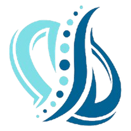
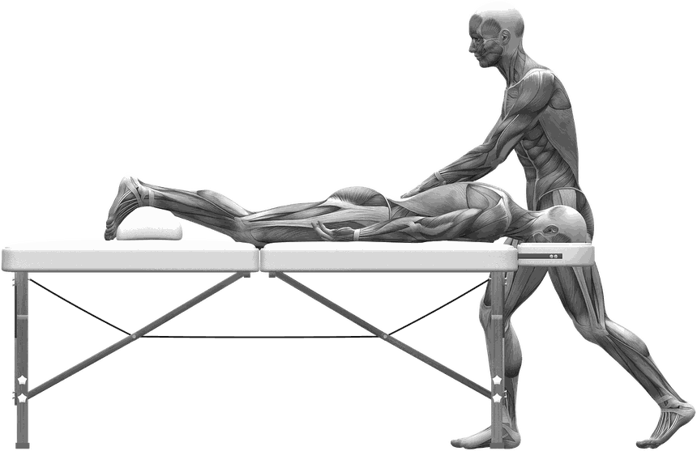

01 — Massage
Massage
sportif
Travail musculaire ciblé pour dénouer les tensions et accélérer la récupération après l'effort.
40.–
30 minutes
→

Axium.Perform Réserver →Le corps progresse en récupérant, pas seulement à l'entraînement. Relâchement musculaire, circulation, mobilité — une approche ciblée, construite séance après séance autour de vos besoins réels.
La récupération n'est pas un luxe.
C'est une partie du travail.
— Sevann, Axium.Perform
Praticien à Genève, athlète de demi-fond. Massage sportif, relaxation et hijama — pour les sportifs comme pour ceux qui ne le sont pas.
 Athlète & praticien
Athlète & praticien
Athlète de demi-fond à la base, Sevann connaît la fatigue musculaire et nerveuse de l'intérieur — celle qui suit un bloc d'intensité, une compétition, ou simplement une semaine trop chargée.
Axium.Perform est né de ce constat. Chaque séance est construite autour de vos besoins du moment — tension localisée, fatigue générale, ou simple besoin de relâcher.
Deux approches se complètent : le massage, pour le travail musculaire direct et le relâchement nerveux, et la hijama, méthode traditionnelle par ventouses, pour la circulation et la récupération en profondeur.

Trois principes qui structurent chaque séance, du premier échange à la récupération.
Une compréhension de la fatigue construite sur l'entraînement, pas seulement sur la théorie.
Chaque séance s'adapte au profil de la personne — sportif ou non.
Massage et hijama, utilisés seuls ou combinés selon le besoin.
Trois formules, une même logique : travailler ce que votre corps demande ce jour-là, seul ou en combinaison.
Travail musculaire ciblé pour dénouer les tensions et accélérer la récupération après l'effort.
Relâchement global du corps et du système nerveux — pour souffler et récupérer en profondeur.
Méthode traditionnelle par ventouses, pour stimuler la circulation et la récupération en profondeur.
Quatre temps, de l'échange initial aux conseils de récupération.
Un point rapide sur vos douleurs, votre charge d'entraînement et l'objectif du jour.
Selon ce que votre corps demande ce jour-là, seul ou en combinaison.
Relâchement musculaire, retour au calme, corps déchargé.
Hydratation, points de vigilance et suivi jusqu'à la prochaine séance.
Choisissez votre créneau directement en ligne. Annulation gratuite jusqu'à 24h avant la séance.
Choisissez directement votre créneau, en quelques clics.